AppliCAD Business Development
คู่มือการใช้งาน LaunchPAD Portal
คู่มือตามหน้าจอ Production จริง ตั้งแต่การส่ง Idea การวิเคราะห์ด้วย AI การตรวจคะแนนและเอกสาร ไปจนถึง Dashboard และการตั้งค่าระบบ
อัปเดต 30 มิถุนายน 2026
ภาษาไทย
อ้างอิง main @ b74935e
Next.js 14 · Supabase · tRPC
01 · Overview
ภาพรวมระบบ
LaunchPAD Portal เป็นระบบรับและประเมิน Idea สำหรับงาน Business Development ผู้ส่งสามารถส่งข้อมูลแบบข้อความ ไฟล์ หรือลิงก์ ทีม BD ใช้ AI ช่วยวิเคราะห์ ปรับคะแนน และสร้างเอกสารประกอบการตัดสินใจ
1. Submit ส่ง Idea และรับเลขอ้างอิง
→
2. Run AI BD/Admin เริ่มวิเคราะห์
→
3. Review อ่านผลและปรับคะแนน
→
4. Documents ดูหรือดาวน์โหลดเอกสาร
→
5. Dashboard ติดตามภาพรวมและ Export
ลำดับจริงของระบบ: การส่ง Idea จะบันทึกเป็น pending ก่อน ระบบยังไม่เริ่ม AI อัตโนมัติ ทีม BD Reviewer หรือ Admin ต้องกด Run AI จากหน้า Ideas เพื่อเริ่มวิเคราะห์
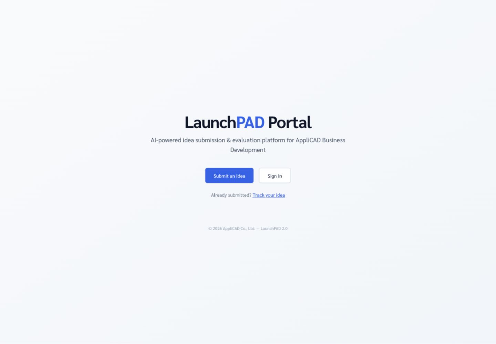
ภาพหน้าจอ 01 · หน้าแรก ไฟล์ assets/01-home.png
ภาพ 01 หน้าแรกมีทางลัด Submit an Idea, Sign In และ Track your idea
02 · Roles
บทบาทและสิทธิ์
สิทธิ์เรียงจากน้อยไปมาก: guest → internal_submitter → bd_reviewer → admin โดยบทบาทระดับสูงกว่าจะใช้ความสามารถของระดับต่ำกว่าได้
Guest ผู้ส่งภายนอก ส่ง Idea ได้โดยไม่ต้องเข้าสู่ระบบ และได้รับหมายเลขอ้างอิงสำหรับหน้า Track
Internal Submitter ผู้ส่งภายใน เข้าสู่ระบบเพื่อดูรายการ Idea ของตนเอง พร้อมใช้หน้าส่งและติดตามแบบเดียวกับ Guest
BD Reviewer ทีมพิจารณา ดู Idea ทั้งหมด รัน AI อ่านผลวิเคราะห์ ปรับคะแนน ดู/ดาวน์โหลดเอกสาร และเปิด Dashboard ที่กำหนดไว้
Admin ผู้ดูแลระบบ มีสิทธิ์ของ Reviewer เพิ่มเติมด้วย Source Analytics และการจัดการผู้ใช้ API Key, AI Model และ Prompt Config
ความสามารถ Guest Internal BD Reviewer Admin
ส่งและติดตาม Idea ✓ ✓ ✓ ✓ ดู Idea ของตนเอง — ✓ ✓ ✓ รัน AI / ดู Analysis / ปรับคะแนน — — ✓ ✓ Executive และ BD Team Dashboard — — ✓ ✓ Source Analytics / ตั้งค่าระบบ — — — ✓
หมายเหตุ: ระบบปัจจุบันไม่มีบทบาท bd_lead แยกต่างหาก หน้าที่ระดับนั้นอยู่กับ admin
03 · User Journey
เส้นทางการใช้งานหลัก
A
ผู้ส่ง Idea หน้าแรก → Submit → กรอกข้อมูล → รับเลขอ้างอิง → เก็บเลขไว้ตรวจสอบภายหลัง
B
ทีม BD Sign In → Ideas → Run AI → ดู Analysis → ปรับคะแนน → ดู/ดาวน์โหลดเอกสาร
C
Admin Sign In → Settings → Key/Model/Prompt/User → Executive Dashboard → Analytics/Export
04 · Submit Idea
การส่ง Idea
เปิดหน้า Submit จากหน้าแรกกด Submit an Idea หรือเปิด /th/submitกรอกข้อมูลผู้ส่ง ระบุชื่อ Idea ชื่อผู้ส่ง อีเมลติดต่อ และประเภทผู้ส่ง: พนักงาน ผู้บริหาร พาร์ทเนอร์ หรือผู้จำหน่ายเลือกวิธีส่งเนื้อหา ข้อความ, อัปโหลด PDF/PPTX/DOCX/DOC/HTML (สูงสุด 50 MB) หรือลิงก์ URLตรวจเนื้อหาที่อ่านได้ กรณีไฟล์หรือลิงก์ ให้ตรวจตัวอย่างข้อความที่ระบบดึงมา หากอ่านไฟล์ไม่ได้สามารถกรอกเนื้อหาเองกด “ส่ง Idea” ระบบสร้าง Idea ที่ Stage Sandbox และแสดงหมายเลขอ้างอิงรูปแบบ LP-XXXXXXXX
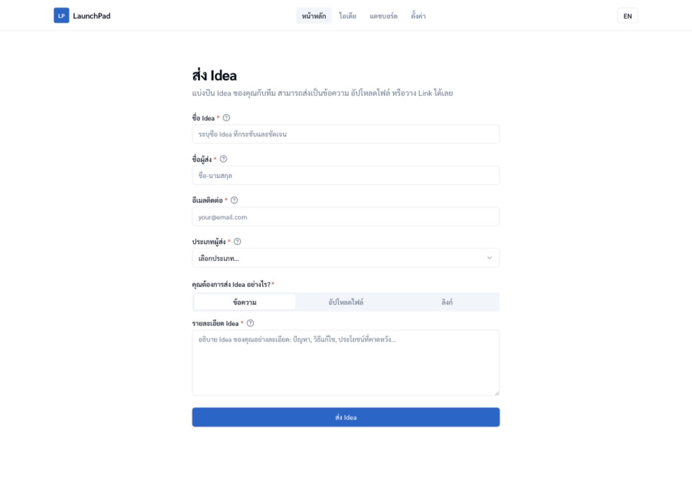
ภาพหน้าจอ 02 · ส่ง Idea ไฟล์ assets/02-submit-text.png
ภาพ 02 แบบฟอร์มส่ง Idea และตัวเลือกข้อความ/ไฟล์/ลิงก์
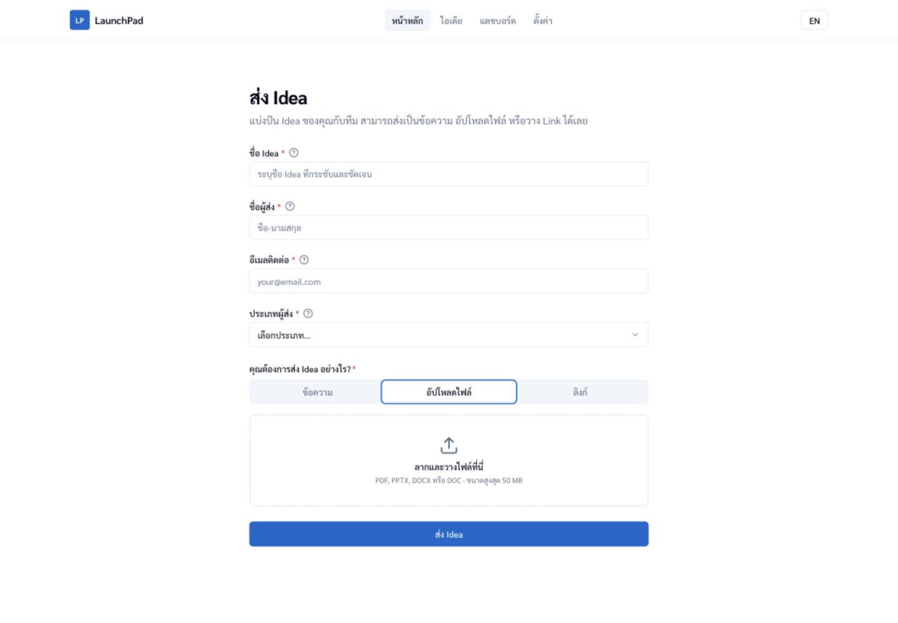
ภาพหน้าจอ 03 · ไฟล์และลิงก์ ไฟล์ assets/03-submit-file-url.png
ภาพ 03 ระบบแสดง preview ของข้อความที่สกัดได้ก่อนส่ง
ควรเก็บหมายเลขอ้างอิงไว้ทันที หมายเลขมีรูปแบบ LP-XXXXXXXX และใช้ในหน้า Track โดยไม่ต้องกรอกอีเมลซ้ำ
05 · Tracking
ติดตามสถานะ Idea
เปิดหน้า Track เลือก “Track your idea” หรือ /th/trackกรอกหมายเลขอ้างอิง รูปแบบ LP-XXXXXXXX แล้วกดค้นหาตรวจผลลัพธ์ หากระบบพบข้อมูลจะแสดงหน้าสถานะ; หากขึ้น “ไม่พบหมายเลขอ้างอิงนี้” ให้เก็บเลขเดิมไว้และติดต่อทีมดูแลระบบ
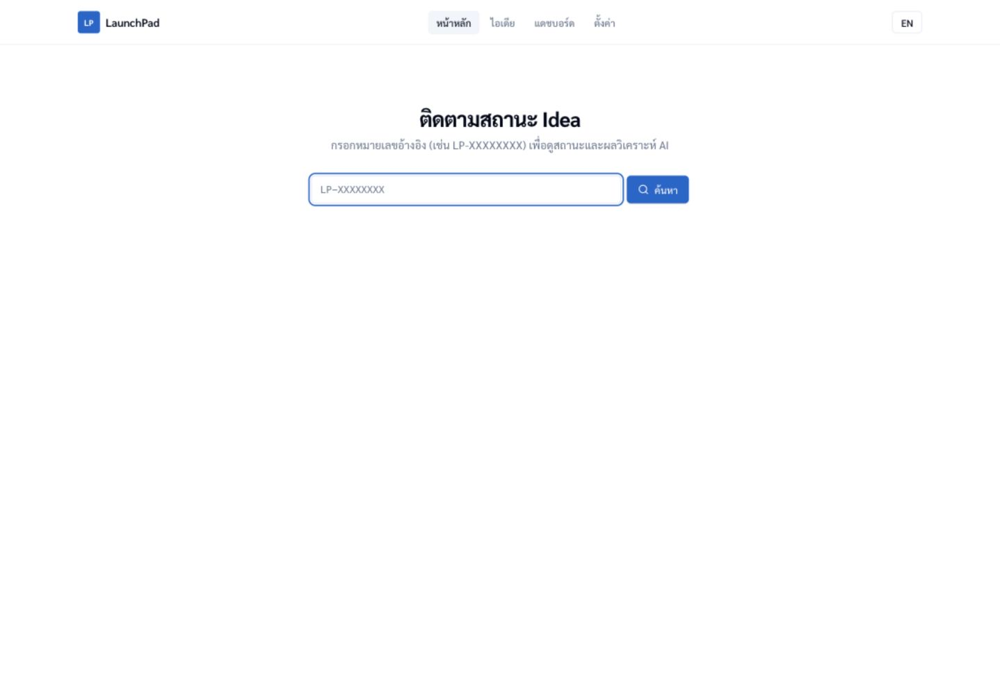
ภาพหน้าจอ 04 · Track ไฟล์ assets/04-track-status.png
ภาพ 04 หน้า Track สำหรับค้นหาด้วยหมายเลขอ้างอิง
ข้อจำกัดที่ตรวจพบใน Production วันที่ 30 มิถุนายน 2026: เลขอ้างอิงจริงจากหน้าส่งสำเร็จ 2 รายการที่ใช้ตรวจสอบยังตอบว่า “ไม่พบ” จึงไม่ควรรับรอง Journey การติดตามกับผู้ใช้ภายนอกจนกว่าจะทดสอบและแก้เส้นทางนี้ผ่าน
06 · Authentication
เข้าสู่ระบบ
ผู้ใช้ภายในเข้าสู่ระบบด้วยอีเมล/รหัสผ่าน หรือขอ Magic Link ทางอีเมล เมื่อสำเร็จระบบจะกลับไปยังหน้าที่ต้องการเปิดเดิม
กด Sign In จากหน้าแรก หรือเปิดหน้าที่ต้องเข้าสู่ระบบ ระบบจะพามาหน้า Sign Inเลือกวิธีเข้าสู่ระบบ กรอก Email + Password หรือกรอก Email แล้วกด Send Magic Link ตรวจสิทธิ์ของบัญชี หน้าที่ใช้งานได้ขึ้นกับ Role ที่ Admin กำหนดใน Settings → Users
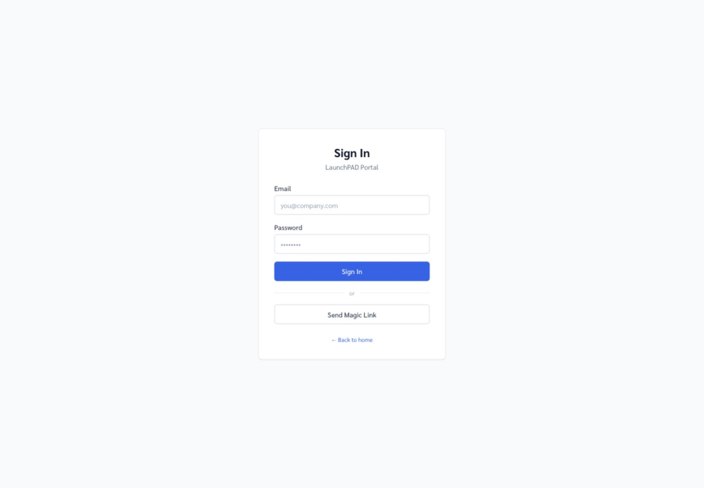
ภาพหน้าจอ 05 · Sign In ไฟล์ assets/05-sign-in.png
ภาพ 05 เข้าสู่ระบบด้วยรหัสผ่านหรือ Magic Link
07 · Ideas & AI
รายการ Idea และการเริ่ม AI
หน้า Ideas ปรับตาม Role: Internal Submitter เห็นเฉพาะงานของตน ส่วน BD Reviewer/Admin เห็นรายการทั้งหมด สถานะ AI และปุ่ม Run AI
เปิดเมนู Ideas BD/Admin จะเห็น Idea ใหม่พร้อมสถานะ Pendingกด Run AI คำขอทำงานแบบ inline ภายใต้งบเวลาประมาณ 60 วินาที ควรรอจนปุ่มและข้อความแจ้งผลเสร็จเปิดผลวิเคราะห์ เมื่อสถานะเป็น AI Done คลิกรายการเพื่อดูประเภท Idea คำแนะนำ คะแนน feasibility และเอกสารปรับคะแนนเมื่อจำเป็น BD Reviewer สามารถ override คะแนนพร้อมเหตุผล ระบบเก็บ audit trail ของการแก้ไข
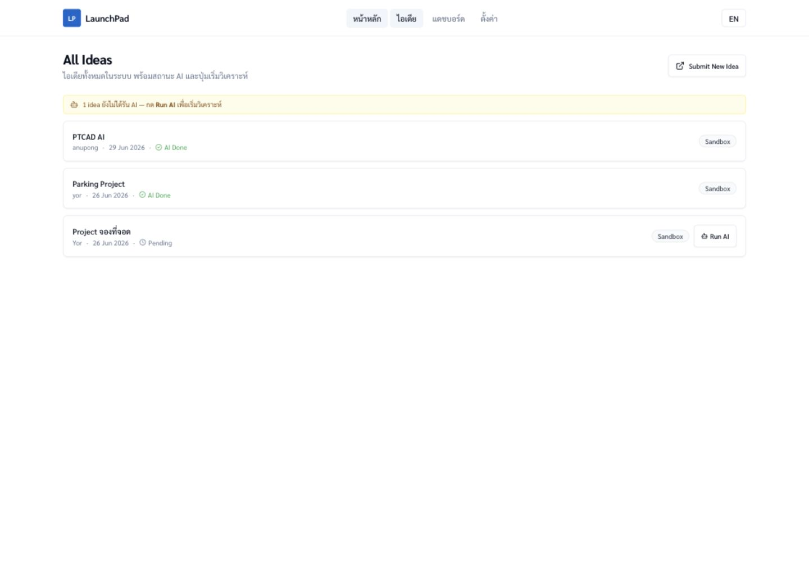
ภาพหน้าจอ 06 · Ideas / Run AI ไฟล์ assets/06-ideas-run-ai.png
ภาพ 06 รายการ Idea สถานะ AI, Stage และปุ่ม Run AI
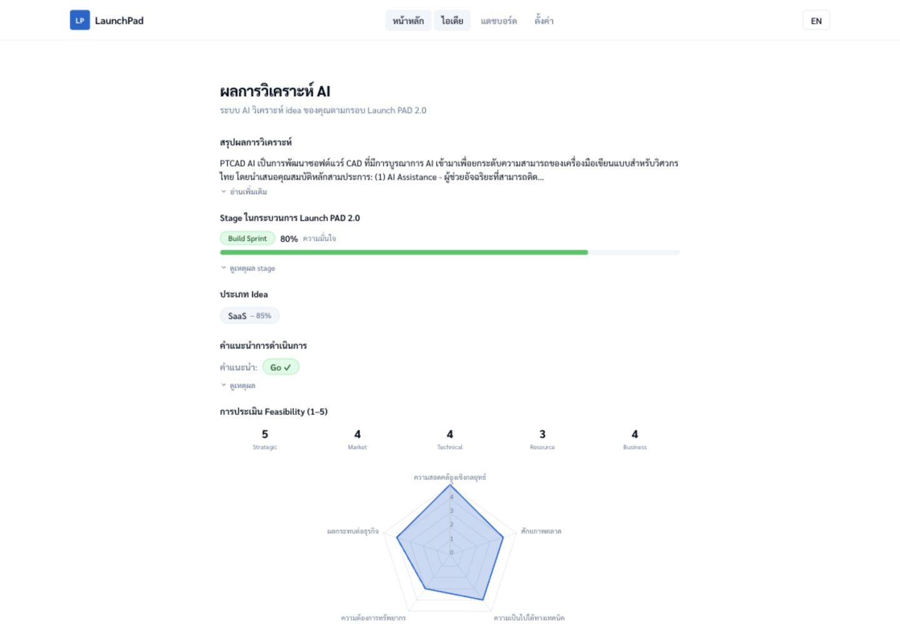
ภาพหน้าจอ 07 · AI Analysis ไฟล์ assets/07-ai-analysis.png
ภาพ 07 ผลวิเคราะห์ คะแนน Feasibility และคำแนะนำ Go / Conditional Go / No Go
08 · Review
BD Review ที่ใช้งานได้ในหน้าปัจจุบัน
รายการและผล AI หน้า Ideas แสดงรายการทั้งหมดสำหรับ BD Reviewer/Admin คลิกงานที่ AI Done เพื่อเปิดผลวิเคราะห์ อ่าน Summary, Stage confidence, Recommendation และ Portfolio Match ดูเอกสารที่สร้างแล้วในหน้าเดียวกัน การปรับคะแนน เลือกมิติ Feasibility ที่ต้องการแก้ไข กำหนดคะแนนใหม่ 1–5 ระบุความคิดเห็นประกอบก่อนบันทึก ระบบเก็บ audit trail ของการแก้คะแนน
Stage ที่ใช้งาน
Sandbox รับและคัดกรอง Idea
→
Validation Sprint ทดสอบปัญหา/สมมติฐาน
→
Build Sprint พัฒนาและเตรียมใช้งาน
→
Launch & Test เปิดตัวและวัดผล
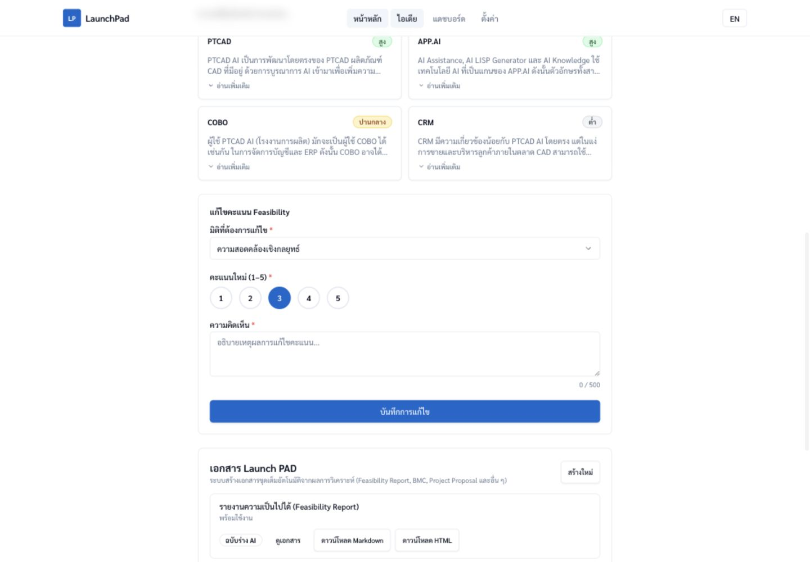
ภาพหน้าจอ 08 · BD Review / Pipeline ไฟล์ assets/08-review-pipeline.png
ภาพ 08 แบบฟอร์ม Override คะแนน Feasibility ในหน้าผล AI
ยังไม่ใช่หน้าที่เปิดใช้งานใน UI: โค้ดมีส่วนประกอบ Kanban, Document Editor, Stage Transition, No-Go และ Document Approval แต่ยังไม่พบ route/page ที่เชื่อมส่วนเหล่านี้ใน Production ปัจจุบัน คู่มือนี้จึงไม่ระบุว่าเป็นขั้นตอนใช้งานจริง
09 · Documents
เอกสาร Launch PAD
หลัง AI Analysis เสร็จ ระบบจะสร้างชุดเอกสารแบบ inline และแสดงสถานะเป็นรายฉบับ ผู้ใช้สามารถ preview หรือดาวน์โหลด Markdown/HTML ได้จากหน้าผลวิเคราะห์
สถานะ Watermark ฉบับร่าง AI — สถานะที่เห็นในตัวอย่าง Production ปัจจุบันผ่านการตรวจ BD และ อนุมัติแล้ว — รองรับในข้อมูล/บริการ แต่ยังไม่มีหน้าจอแก้และอนุมัติที่เชื่อมใน route ปัจจุบันการใช้งาน กด “ดูเอกสาร” เพื่อเปิด preview ดาวน์โหลด Markdown สำหรับแก้ไขต่อ ดาวน์โหลด HTML สำหรับเปิด/พิมพ์ กด “สร้างใหม่” เมื่อต้องการ regenerate ชุดเอกสาร
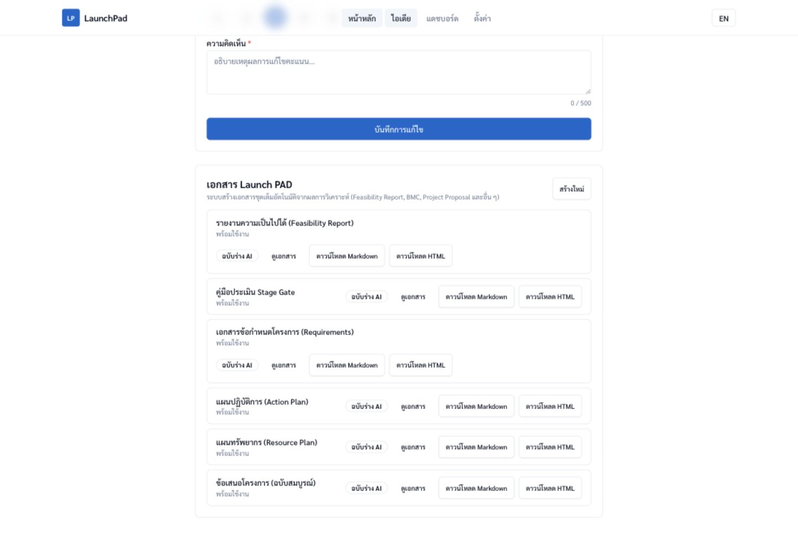
ภาพหน้าจอ 09 · เอกสาร Launch PAD ไฟล์ assets/09-documents.png
ภาพ 09 รายการเอกสาร สถานะ watermark, preview และปุ่มดาวน์โหลด
10 · Dashboards
Dashboard และการส่งออกรายงาน
Executive Dashboard KPI จำนวน Idea, Win Rate, เวลาเฉลี่ยต่อ Stage และกราฟ Pipeline/Win-No-Go
BD Team Dashboard จำนวนงานรอตรวจและ workload ของ Reviewer แยกตาม Stage เปิดตรงที่ /th/dashboard/bd-team
Analytics & Export สำหรับ Admin เปิดตรงที่ /th/dashboard/analytics เพื่อวิเคราะห์แหล่งที่มาและส่งออก Excel หรือ Print/PDF
เลือกช่วงเวลา ค่าเริ่มต้น 30 วันล่าสุด หรือเลือก 7 วัน, 3 เดือน, YTD และช่วงกำหนดเองอ่าน KPI และกราฟ คลิก View Summary เพื่อดูข้อมูล Idea ที่เกี่ยวข้องในรายละเอียดส่งออกรายงาน หน้า Analytics เลือก Export Excel หรือ Print/PDF ตามวัตถุประสงค์
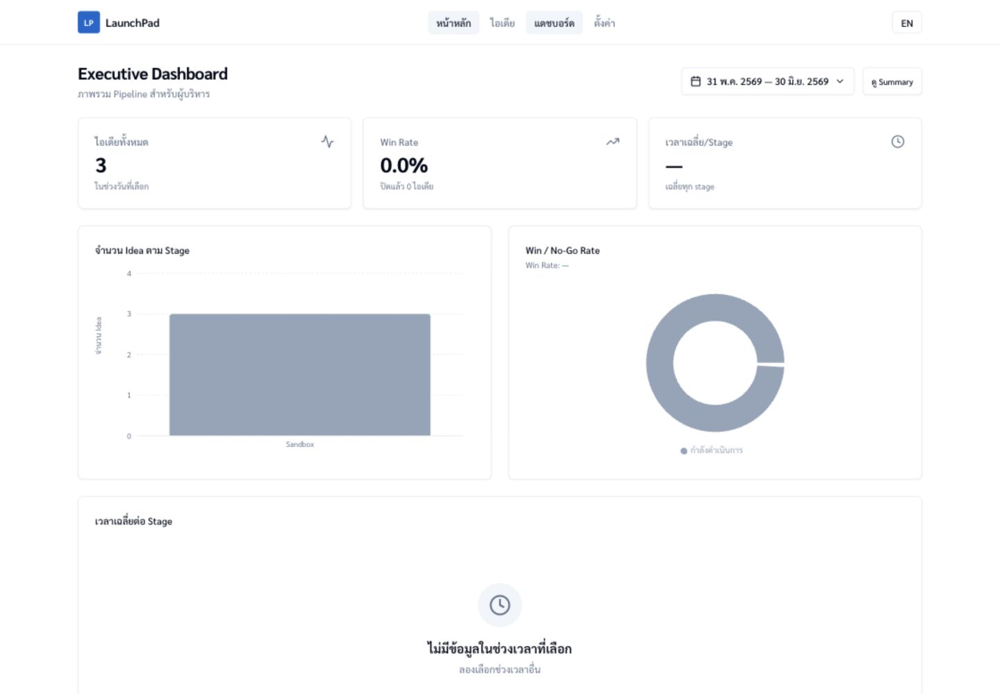
ภาพหน้าจอ 10 · Executive Dashboard ไฟล์ assets/10-executive-dashboard.png
ภาพ 10 KPI และกราฟสรุป Pipeline ตามช่วงเวลา
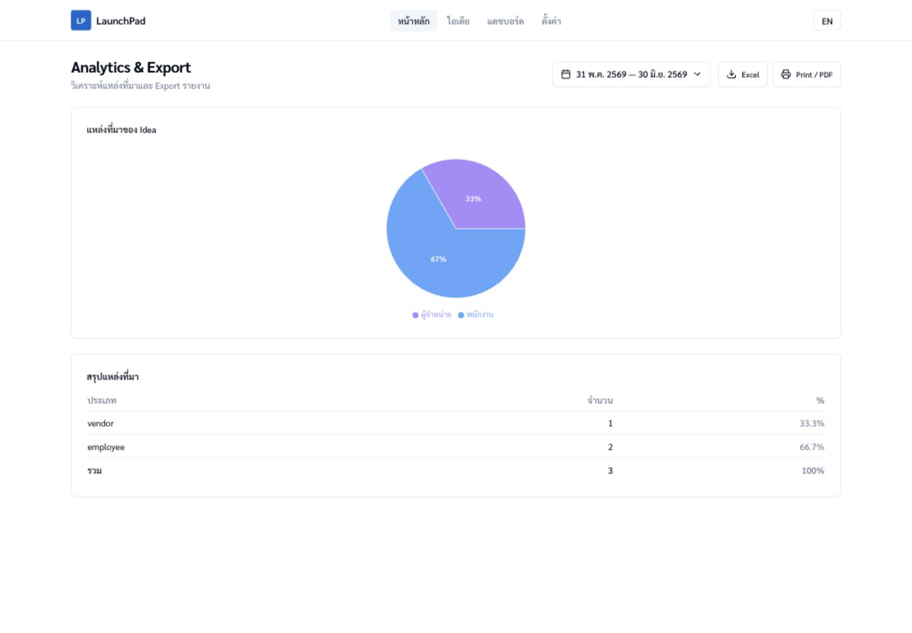
ภาพหน้าจอ 11 · Analytics & Export ไฟล์ assets/11-analytics-export.png
ภาพ 11 Source Analysis และตัวเลือกส่งออก Excel/Print
11 · Admin Settings
การตั้งค่าระบบ
Settings เป็นพื้นที่สำหรับ Admin มี 4 แท็บ: AI Configuration, Prompt Config, API Keys และ Users การตั้งค่ามีผลต่อการวิเคราะห์และเอกสารรอบถัดไป
API Keys
กด Add Key ตั้งชื่อและเลือก Anthropic, Google, AWS Bedrock หรือ OpenRouterกรอกและทดสอบ Key ต้องผ่าน Test ก่อนปุ่ม Save จึงใช้งานได้กำหนด Active เลือก Key ที่ระบบใช้เป็น provider หลัก Key จะถูก mask และไม่แสดงค่าจริงอีกหลังบันทึกลบ Key ที่ไม่ใช้ ตรวจให้แน่ใจว่ามี Key อื่นพร้อมใช้งานก่อนลบ Active Key
AI Configuration
ตรวจ Active Provider และกด Load/Refresh Models
เลือก Analysis Model, Document Generation Model, Default Model และ Fallback Model
กด Save Configuration เมื่อค่าถูกต้อง
Users
เพิ่มผู้ใช้ด้วย Email, ชื่อ, รหัสผ่าน และ Role
เปลี่ยน Role จาก dropdown ในตารางผู้ใช้
ลบบัญชีที่ไม่ใช้งาน (ระบบไม่อนุญาตให้ลบบัญชีตนเอง)
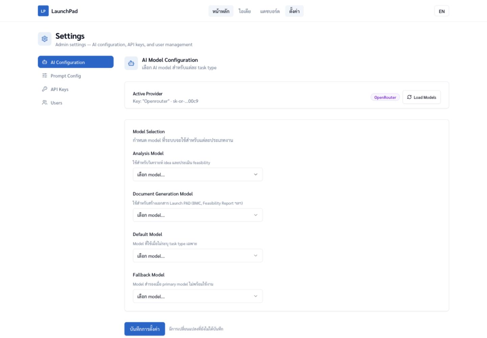
ภาพหน้าจอ 12 · API Keys / AI Models ไฟล์ assets/12-settings-api-models.png
ภาพ 12 Active Provider และการเลือก Model ตามประเภทงาน
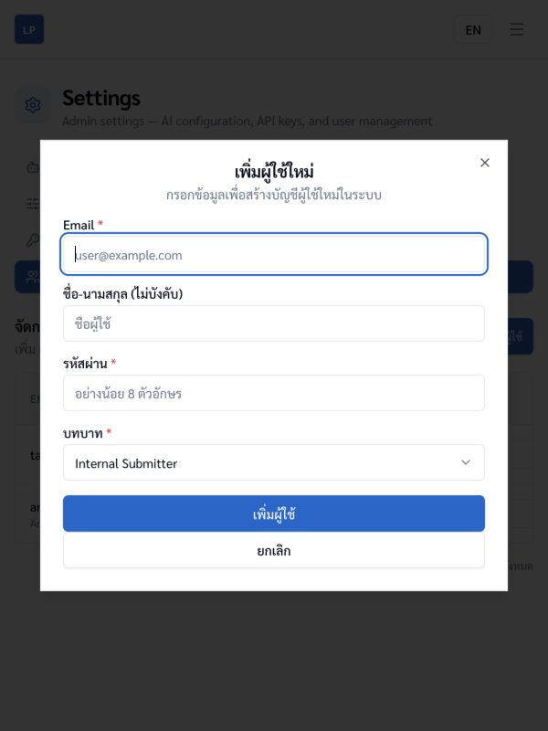
ภาพหน้าจอ 13 · Users ไฟล์ assets/13-settings-users.png
ภาพ 13 ฟอร์มเพิ่มผู้ใช้และกำหนด Role (ภาพไม่แสดงรายชื่อบัญชีจริง)
12 · Prompt Configuration
ตั้งค่า Prompt สำหรับเอกสาร
Prompt Config แยกเป็น System Prompt กลาง และ instruction ราย section ของเอกสารแต่ละประเภท การเปลี่ยนค่าจะถูกนำไปใช้กับการสร้างเอกสารครั้งถัดไป
เปิด Settings → Prompt Config เมนูซ้ายแสดง System Prompt และประเภทเอกสารตามลำดับ workflowแก้ System Prompt กลาง กำหนดบุคลิก ภาษา และหลักการตอบรวม (สูงสุด 8,000 ตัวอักษร) แล้วกดบันทึกเลือกประเภทเอกสาร เช่น Feasibility Report, POC Proposal, BMC, Launch PAD Plan หรือ Project Proposalแก้ instruction ราย section แต่ละ section จำกัด 2,000 ตัวอักษร จุดสถานะข้างเมนูหมายถึงมีการเปลี่ยนแปลงที่ยังไม่บันทึกทดสอบ Prompt กด “ทดสอบ Prompt” → “Test Prompt” ระบบใช้ Sample Idea แสดงผล AI เพื่อประเมิน instruction ก่อนบันทึกบันทึกหรือ Reset Reset เฉพาะ section, Reset All ทั้งประเภท หรือบันทึกเฉพาะเอกสารที่กำลังแก้
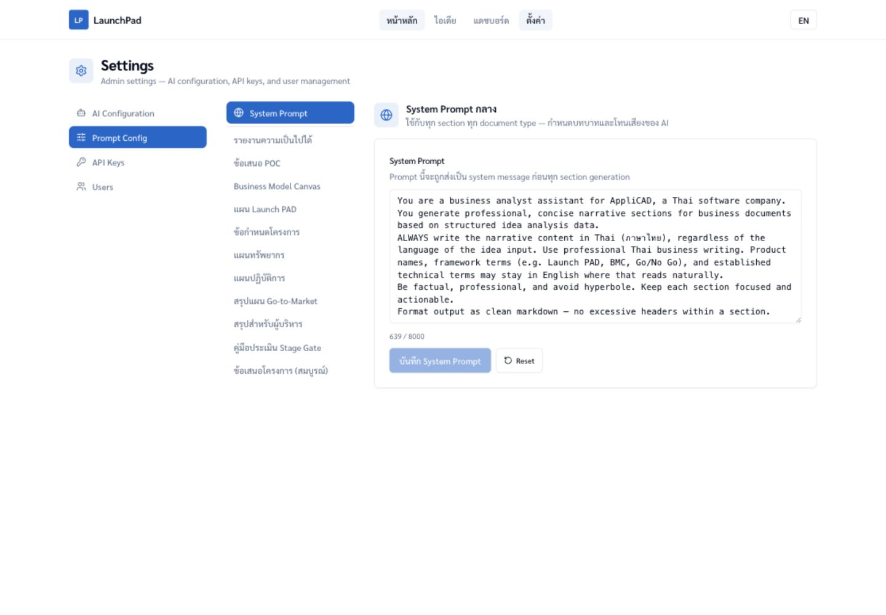
ภาพหน้าจอ 14 · System Prompt ไฟล์ assets/14-prompt-system.png
ภาพ 14 System Prompt กลางและตัวนับจำนวนตัวอักษร
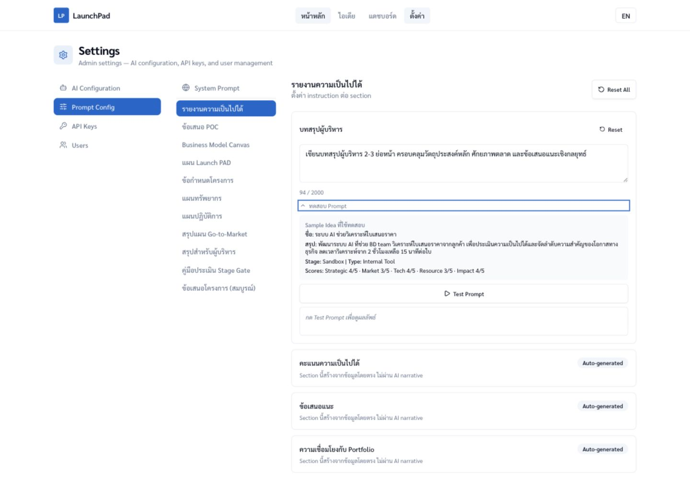
ภาพหน้าจอ 15 · Section / Test Prompt ไฟล์ assets/15-prompt-sections-test.png
ภาพ 15 Instruction ราย section, Sample Idea และผล Test Prompt
แนวทางที่ปลอดภัย: ทดสอบกับ Sample Idea ก่อนบันทึก, เปลี่ยนทีละ section และเก็บข้อความเดิมไว้เมื่อแก้ Prompt สำคัญ การกด Reset All จะคืนค่ามาตรฐานของเอกสารประเภทนั้น
13 · Notes
ข้อควรทราบในสถานะปัจจุบัน
การประมวลผล AI Analysis และ Document Generation ทำงาน inline ผ่าน tRPC ควรรอคำขอให้เสร็จและหลีกเลี่ยงการปิดหน้าระหว่างประมวลผล Queue/Edge Function worker มีอยู่ใน repo แต่ยังไม่ใช่เส้นทาง production ภาษาและ Navigation รองรับ path /th และ /en ปุ่ม TH/EN เปลี่ยน locale ของหน้าปัจจุบัน Navbar แสดง Home, Ideas, Dashboard, Guide และ Settings ความลับและ Key AI Provider Key จัดการผ่าน Settings → API Keys Key ถูกเก็บแบบเข้ารหัสใน Supabase Vault ค่าจริงไม่ถูกแสดงอีกหลังบันทึก Health และการช่วยเหลือ Health endpoint: /api/trpc/health.check หาก AI ล้มเหลว ให้ตรวจ Active Key และ Model ก่อน หากไม่มีสิทธิ์ ให้ Admin ตรวจ Role ใน Users ข้อจำกัดของ Tracking หน้า Track เปิดใช้งานได้ แต่การตรวจ Production วันที่ 30 มิ.ย. 2026 ยังหาเลขอ้างอิงจริงไม่พบ ควรทดสอบเส้นทางนี้หลังแก้ไขก่อนประกาศให้ Guest ใช้งาน Review/Pipeline ที่ยังไม่เชื่อมหน้า Kanban, Stage Transition, No-Go, Editor และ Approval มีส่วนประกอบในโค้ด ยังไม่มี route/page ใช้งานจริงใน navigation ปัจจุบัน
Checklist ก่อนเริ่มใช้งานจริง
Admin เพิ่มและ Test API Key สำเร็จ พร้อมกำหนด Active
เลือก Analysis, Document, Default และ Fallback Model ครบ
ตรวจ System Prompt และ instruction ของเอกสารหลัก
สร้างบัญชีผู้ใช้และกำหนด Role ถูกต้อง
ทดลอง Journey หลัก Submit → Run AI → Analysis → Documents อย่างน้อย 1 Idea
ตรวจและแก้ Tracking จนค้นเลขอ้างอิงจาก Production ได้ก่อนเปิดให้ Guest ใช้งานจริง